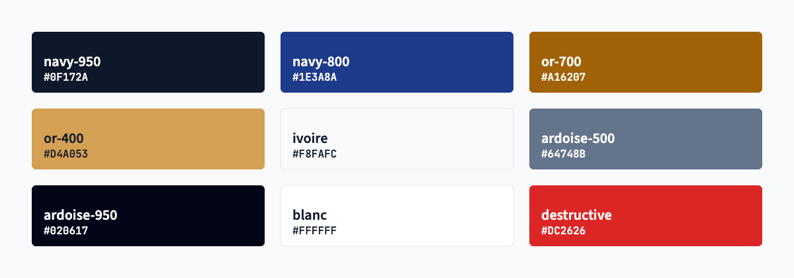
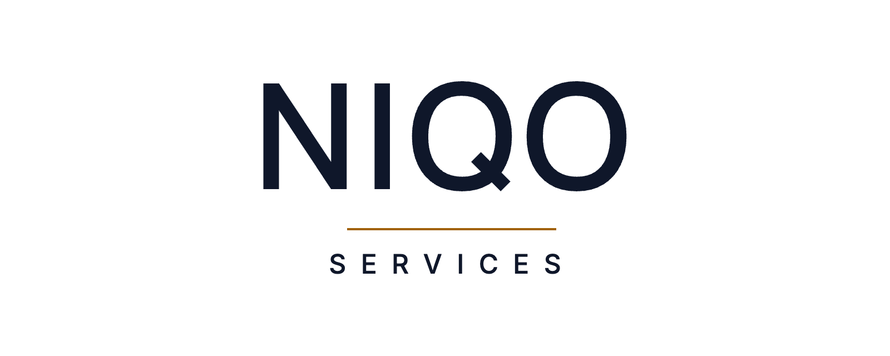
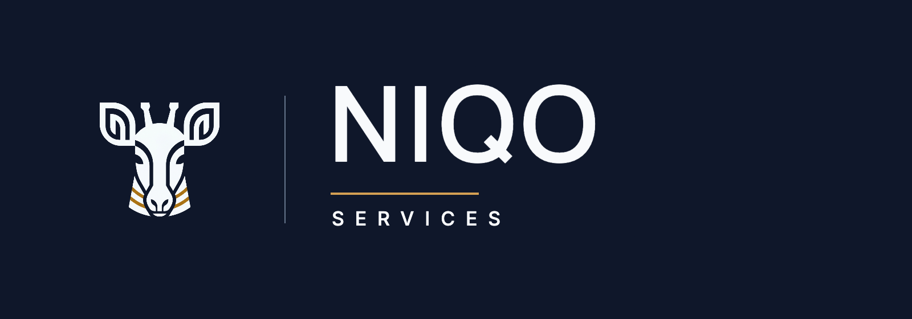
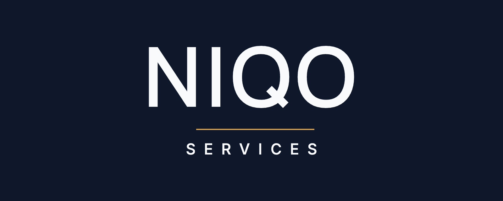
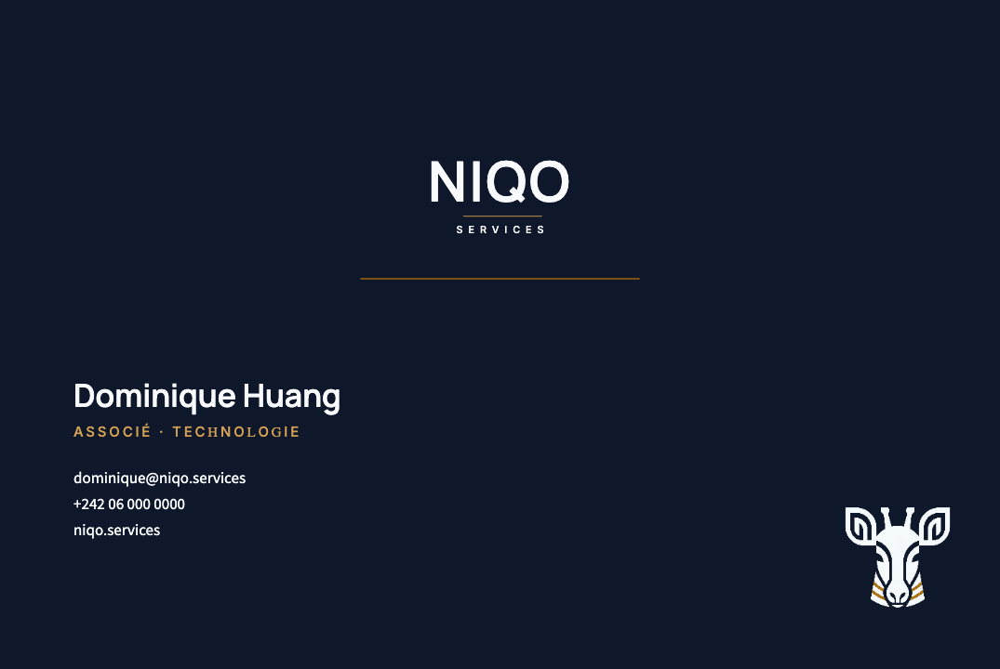
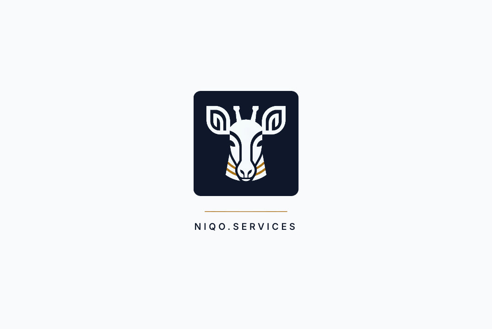
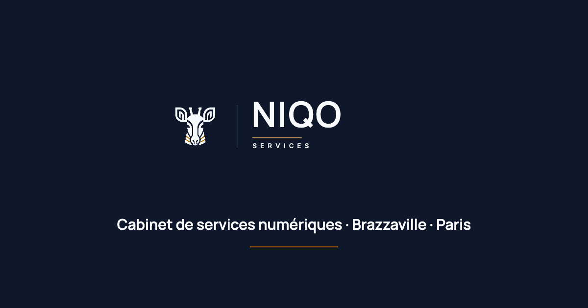

NIQO
SERVICES
Brand Guidelines · MMXXVI
Niqo Services conçoit, construit et administre les systèmes numériques des institutions sérieuses — de Brazzaville à Paris. Nous prenons un petit nombre d'engagements et les tenons au standard d'un cabinet privé : discrétion, précision, et une responsabilité qui ne s'arrête pas à la livraison.
Notre emblème est l'okapi, mammifère rare endémique du bassin du Congo — réservé, exact, discrètement distingué. Il enracine la marque dans sa géographie et incarne notre idée directrice : l'excellence discrète. La marque doit projeter l'autorité d'une grande maison, jamais le folklore ni l'esbroufe.
« L'okapi est rare, exact et discrètement distingué. Le travail que nous signons l'est aussi. »
Deux fonds : ivoire (le papier) et navy (l'autorité). L'or est un accent — jamais un aplat.

Titres — 500 / 600 / 700. Géométrique, confiant, resserré sur les grandes tailles.
Règle : un seul élément en capitales — le logotype. Les corps de texte sont toujours en Source Sans 3, jamais en Manrope ni Inter.

Zone de protection : conserver une marge égale à la hauteur d'une oreille autour de la marque. Taille minimale : 16 px (favicon), légibilité vérifiée.
Silhouette héraldique de profil, dans la tradition des grandes maisons. Deux cornes coniques, une oreille arrondie, un museau effilé, un cou arqué, et 2–3 fines rayures or — la signature de l'okapi.
Aplat d'une seule couleur. Aucun contour, dégradé, ombre ou texture. Le fond navy est un rectangle séparé, retirable pour les contextes sombres.
L'okapi n'est jamais dessiné comme un cheval, un cerf ou un zèbre ; aucune stylisation enfantine ; aucun cadre, ruban ou texte à l'intérieur du sceau.




Carte 85 × 55 mm, fond perdu 3 mm. Recto navy, verso ivoire. Le papier en-tête A4 reprend le verrouillage horizontal et le filet or. Voir print/letterhead-a4.html.

Pour toute demande relative à la marque :